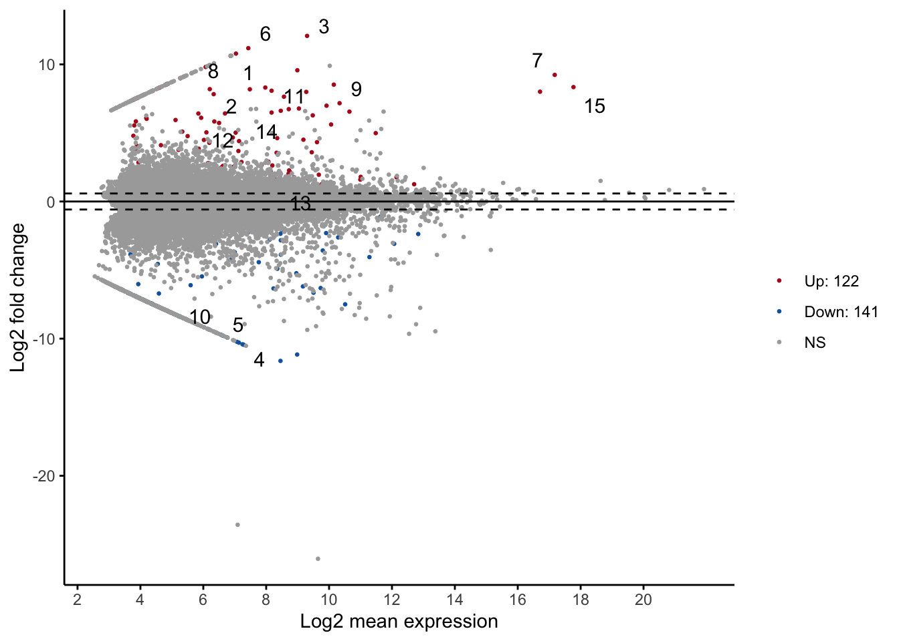
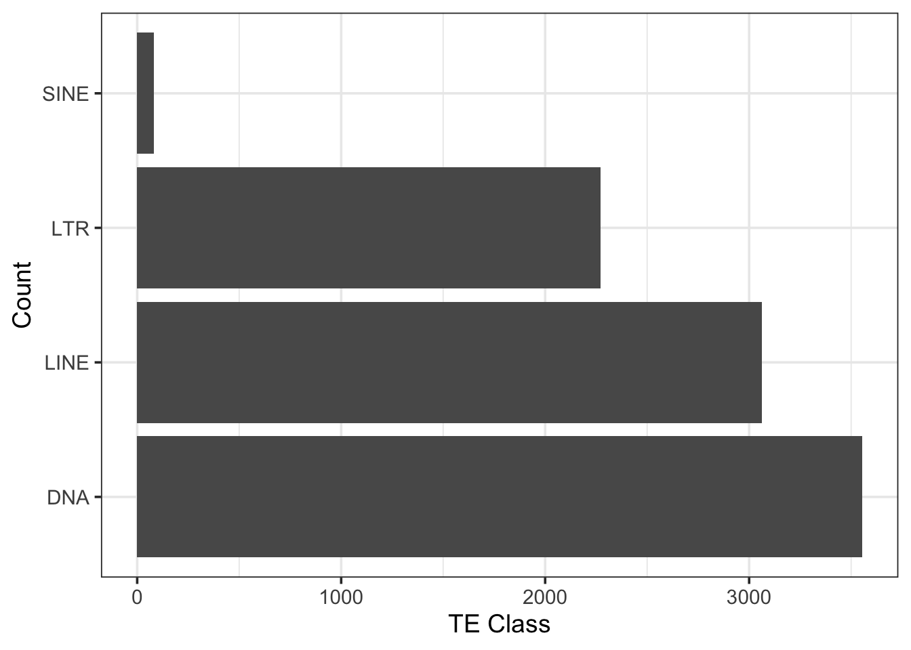
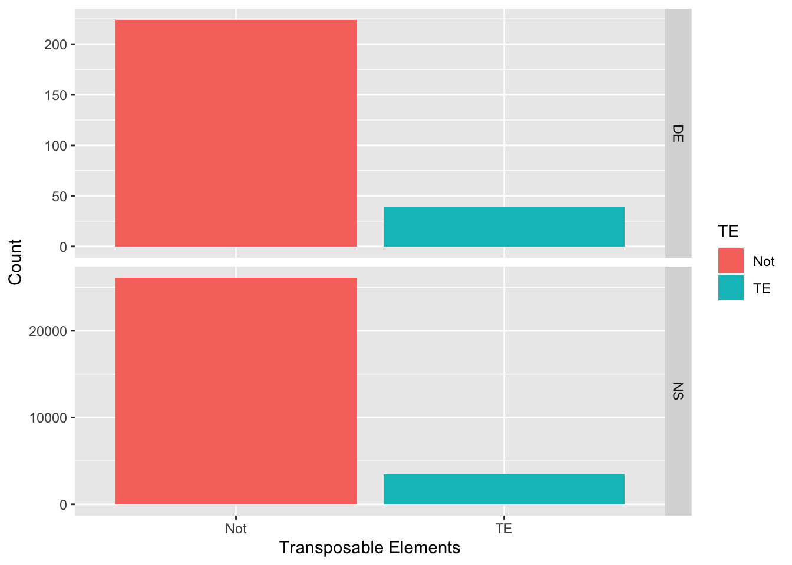
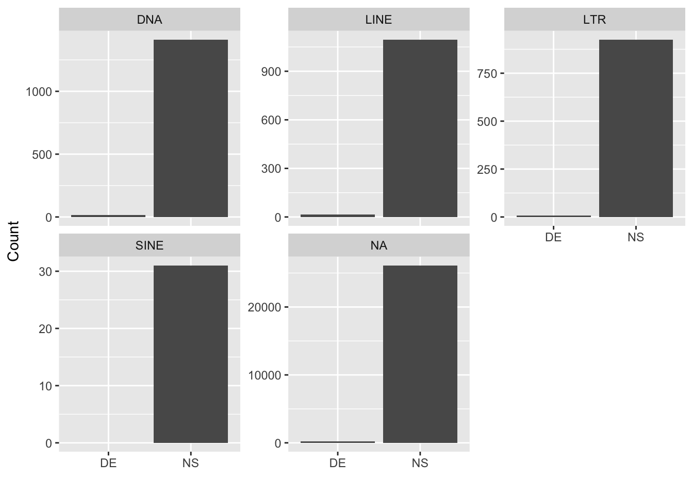

library("tidyr")
library("dplyr")
library("ggpubr")
library("stringr")
library("plyr")Demo Report
You can download a copy of the .qmd here that generated this page and use it as a template for your report. Your report should be “firstname_report.qmd”. It’ll be converted to “firstname_report.html” when you have rendered it.
1 Introduction
See here for the background of the project.
Here, we hypothesize that TEs are contributing to the differentiation between queens and workers in eusocial shrimps. We expect to find more TEs in differentially expressed (DE) genes than in non-DE genes.
2 Methods & Results
From the eusocial shrimp Synalpheus elizabethae, we obtained RNA-seq data from three queens and three workers. The transcriptome is assembled with Trinity (Haas et al. 2013) and transposable elements were identified with Repeat Masker (Tarailo-Graovac and Chen 2009). We performed differential gene expression analysis using Galaxy (Blankenberg et al. 2010) and DESeq2 (Love et al. 2014). All statistical analyses were performed in R and detailed below.
2.1 Differential expressed transcripts
Among 29,833 transcripts that were shared among the six samples, 122 are up regulated and 141 are down regulated.
# Read Galaxy output
df = read.delim(file = "input.matrix.Q_vs_W.DESeq2.txt", row.names = NULL)
# rename the first column
names(df)[1] = "seqid"
# Report nrow
print(paste("Number of total transcript = ", nrow(df)))[1] "Number of total transcript = 29833"# MA plot
ggmaplot(df, size = 0.5) 
2.2 Transcribed transposable elements
From the transcriptome, 8,970 transcripts contained transposable elements. The more abundant TE class was DNA transposons, followed by LTR and LINE, with SINE being the least abundant.
# Load results from Repeat Masker
df_transcript_te = read.table("Elizabethae_Assembly_Trinity.fasta.out", header = F, skip = 3, fill = T ,col.names = c("SW_score", "perc_div", "perc_del", "perc_inc", "seqid", "start", "end", "left", "strand","repeat", "TE_class_family", "TE_start", "TE_end", "TE_left", "ID", "duplicate"), )
# Some columns have numbers in () that needs to be removed.
df_transcript_te$left = gsub("[()]","",df_transcript_te$left)
df_transcript_te$TE_start = gsub("[()]","",df_transcript_te$TE_start)
df_transcript_te$TE_left = gsub("[()]","",df_transcript_te$TE_left)
# Remove duplicates generated by Repeat Masker
df_transcript_te = filter(df_transcript_te, !duplicate=="*")
# Keep first entry for each seqid
df_transcript_te = group_modify((group_by(df_transcript_te, seqid)), ~.x[1,])
# Get TE_class & TE_family from TE_class_family
df_transcript_te$TE_class = str_split(df_transcript_te$TE_class_family, "/", simplify= T)[,1]
df_transcript_te$TE_family = str_split(df_transcript_te$TE_class_family, "/", simplify= T)[,2]
# Keep only the four major classes of TE (DNA, LINE, LTR and SINE).
df_transcript_te = filter(df_transcript_te, TE_class%in%c("DNA", "LINE", "LTR", "SINE"))
# Calculate TE length
df_transcript_te = mutate(df_transcript_te, TE_length = abs(end - start)+1)
# Report nrow
print(paste("Number of TEs identified = ", nrow(df_transcript_te)))[1] "Number of TEs identified = 8970"# Plot TE distribution
ggplot(df_transcript_te, aes(TE_class)) +
geom_bar() +
coord_flip() +
theme_bw(base_size=14) +
labs(y = "TE Class", x = "Count")
2.3 Are there more TEs in differentially expressed transcripts?
If TEs are contributing to the evolution of the worker-queen differentiation, we expect to find more TEs in differentially expressed (DE) genes than in non-DE genes. Therefore, we performed a Chi-sqared test of independence on the binomial predictor variable DE (DE vs. NS, for differentially expressed vs. non-significant) against the response variable TE (TE vs. not, for having TE vs. not).
The results showed that the variables DE and TE are independent (Chi-squared = 2.160, d.f. = 1, p = 0.142). This means that the proportions of transcripts having TEs or not are not statistically different between transcripts that are and are not differentially expressed between queens and workers
# Combine the df and df_transcript_te data sets
df_tranTE = left_join(df, df_transcript_te, "seqid")
# Create DE and TE columns
df_tranTE = mutate(df_tranTE,
DE = case_when(padj < 0.05 ~ 'DE',
padj >= 0.05 ~ 'NS'),
TE = case_when(TE_class %in% c("DNA",
"LTR",
"LINE",
"SINE") ~ 'TE',
.default = 'Not')
)
# Chi-squared test
chisq.test(table(df_tranTE$TE, df_tranTE$DE))
Pearson's Chi-squared test with Yates' continuity correction
data: table(df_tranTE$TE, df_tranTE$DE)
X-squared = 2.1595, df = 1, p-value = 0.1417# Plot
ggplot(data = df_tranTE, aes(x = TE, fill = TE)) +
geom_bar() +
facet_grid(DE~., scales = "free_y") +
labs(x = "Transposable Elements", y = "Count")
Further, we tested and showed that TE class (DNA, LTR, LINE, and SINE) did not affect the variable DE (Chi-squared = 1.204, d.f. = 3, p = 0.752).
chisq.test(with(df_tranTE, table(TE_class, DE)))Warning in chisq.test(with(df_tranTE, table(TE_class, DE))): Chi-squared
approximation may be incorrect
Pearson's Chi-squared test
data: with(df_tranTE, table(TE_class, DE))
X-squared = 1.2042, df = 3, p-value = 0.752ggplot(data = df_tranTE, aes(x = DE)) +
geom_bar() +
facet_wrap(~TE_class, scales = "free_y") +
labs(x = "", y = "Count")
3 Conclusion
In summary, we found that transcripts that have TEs are not more differentially expressed. Also, the class of TE does not affect whether a transcribe is differentially expressed. These results do not support the hypothesis that TEs are contributing to the evolution of the worker-queen differentiation.
Although the results did not support the conclusion, the dichotomous classification of transcripts into merely differentially expressed or not may conceal important pattern in the strength of differential expression. Further analysis should consider using a continuous variable based on the fold change of differential expression.